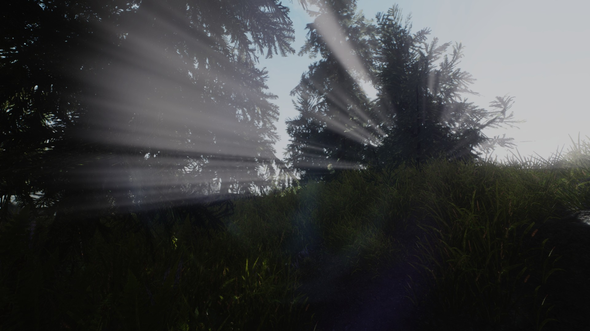
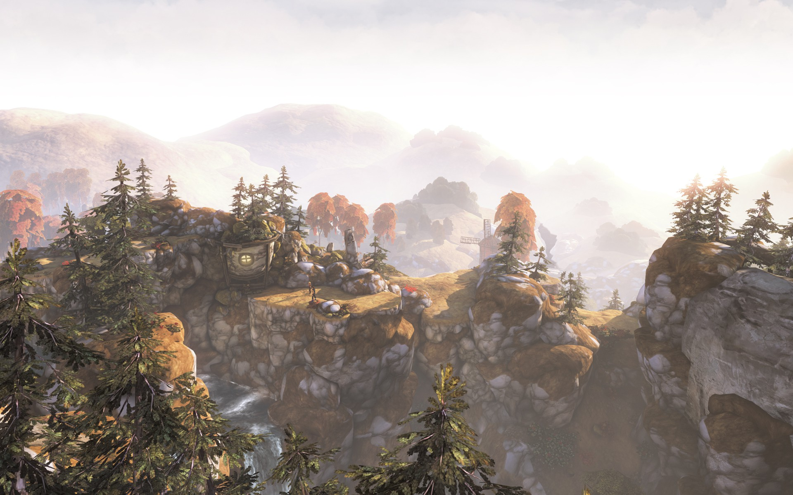

Часть 2:
Заря Past-Gen'а
Введение
В предыдущей части мы коснулись тех технологий, которые на сегодняшний день считаются «cutting-edge» (на самом гребне волны). Какие-то — больше, какие-то — меньше. В этой же мы рассмотрим тех «рядовых тружеников» графического фронта, которым не уделяется того же внимания просто потому, что они уже давно стали стандартом. Но без них, тем не менее, той «next-gen графики», в ожидании которой замер сейчас весь мир, попросту не было бы.
Lens Flares - блики на линзах
Они были в играх задолго до появления Xbox 360 / PlayStation 3, но реализация их была на совершенно другом уровне - по сути, они представляли собой банальные спрайты (как на частицах), на которые натянута текстура блика. Проблемы этого спрайтового метода настолько очевидны, что даже озвучивать их нет смысла. С приходом же Past-Gen'а появилась возможность делать натуральные, киношные блики на линзах. Чем разработчки, разумеется, тут же не преминули воспользоваться. Рассказывать про Lens flares особенно нечего (если не касаться физики и того, как и откуда именно они берутся). Так что вот просто несколько великолепных примеров:
{kind=link}
{kind=link}
On-lens grime/dirt - просто часть эффекта Lens Flare, но она реализовывается немного по-другому, поэтому стоит её упомянуть. Это такие специфические блики, которые появляются, когда на линзах есть грязь / капли воды.
Данная технология сама по себе — просто восхитительна. Главное — знать меру, и тогда она становится незаменимым художественно-выразительным средством, которое позволяет привнести в картинку потрясающую живописность. А рука об руку с фларами идёт их младший брат:
Sun Shafts / God-Rays
{kind=link}
Это такой эффект, который виден, когда пар или туман просвечивается лучами, пробивающимися, например, через листву. На самом деле, с реальной волюметрикой (объёмные явления вроде того же тумана) этот эффект не имеет ничего общего. И на деле является небольшой модификацией Zoom Blur, о котором было сказано в предыдущей части. Но он создаёт именно такую видимость чего-то объёмного и оттого придаёт картинке реализм.
Если его использовать отдельно — это смотрится несколько странно. Потому что просвечивание атмосферы есть, а её самой — нет. Но зато если добавить ещё эффект тумана по глубине — будет бальзам на душу и радость для глаз геймера.
Z-Depth Fog - туман по карте глубины.
{kind=link}
Этот эффект и создаёт ощущение присутствии атмосферы. Он хоть чуть-чуть — но должен быть всегда: хоть на панорамном пейзаже, хоть в камерном помещении. Его отсутствие резко бросается в глаза и создаёт ощущение, что мы находимся в безжизненном вакууме. Дело в том, что в воздухе всегда что-то есть – та же пыль и испарившаяся вода. Их может быть ничтожно мало, но какие-то частицы в воздухе есть всегда. Они настолько мелкие, что никогда не осядут и будут витать в атмосфере вечно. При относительно мелких размерах помещения эффект от них даже не виден. Но стоит выглянуть за окно — и сразу можно заметить, что здания на горизонте гораздо более бледные, чем поблизости. Причём, так обстоят дела не только в городах, коптящих атмосферу смогом, а вообще везде, где есть воздух. Так что для убедительной картинки наличие этого эффекта критически важно.
Этот эффект использовался уже в Quake 3, с тех пор технология слегка изменилась, но общий принцип остался прежним: есть карта глубины, берётся основная картинка и к ней примешивается какой-нибудь цвет по этой карте. Но в результате атмосфера получается чересчур однородной. На каком-то расстоянии картинка полностью окрашивается в этот цвет и получается скучный тусклый фон.
Неудивительно, что игроделы захотели исправить ситуацию. И первое (очевидное) решение — накладывать туман не везде, а только в определённых областях пространства. Ситуацию это исправило, но не сильно. Потом кто-то догадался модифицировать карту глубины в соответствии с экспоненциальным угасанием (поблизости сцена очень быстро окрашивается в туман, а дальше разница всё меньше и меньше). Наконец, приход паст-гена позволил накладывать на карту глубины текстуру (например, движущуюся фотографию реального дыма/пара) и окончательно украшать картинку дополнительными спрайтовыми частицами с клубящимся по земле дымом или бушующим в воздухе снегом.
В результате — на сегодняшний день туман в играх уже очень похож на настоящий и действительно привносит в них атмосферу. Как в прямом, так и в переносном смысле.
Glow / Bloom
Glow-эффект воссоздаёт рассеивание яркого света при его попадании на линзу или глаз. Если луч света очень яркий, то сам он в нашем глазу выглядит как пересвет, а вокруг него возникает «ореол»(лучше всего это видно на неоне). В графике это делается так: берётся изображение, его яркость делится на две части, которые в сумме дадут исходную картинку; та, что менее яркая — это картинка, обозначающая рассеянную часть света, поэтому её размывают и обе части складывают. В результате получается чёткая картинка, но со светлым ореолом вокруг наиболее ярких мест.
Ещё проще можно сделать, если в самом начале не делить исходное изображение на 2 части, а взять оригинал в качестве основного компонента (100% исходника) и слегка затемнённую версию (40%) — в качестве рассеянного (размываемого) компонента. Очевидно, что после сборки итоговая яркость станет больше, чем была первоначально (140%), но обычно разработчики это учитывают и делают исходный рендер чуть темнее, чем нужно в итоге.
Как нетрудно заметить, glow, когда он накладывается на всю картинку, придаёт ей этакой сказочности. А если конкретнее — «затуманенности». Потому что так явно свет рассеивается только в тумане, причём довольно густом. Так что совмещать эти 2 эффекта — как говорится, сам бог послал. Дальше — больше. Если уж мы используем туман, то «делить» исходную картинку на чёткую и рассеиваемую составляющую — можно по карте глубины. Тогда то, что дальше в тумане — сильнее размоется чем то, что ближе. Наконец, можно вообще произвольно крутить две этих части для достижения желаемого эффекта. В таком случае нам очень пригодится HDR-рендеринг: с его помощью при разделении изображения мы сможем сохранить яркости выше 1, да и размоются они гораздо натуральнее.
Но это — у добросовестных разработчиков. А нерадивые — идут на хитрость и под вывеской «HDR» — на самом деле рендерят самым первым способом (100%+40%), просто не везде, а по специально сделанной маске. Отсюда — и пересвет при включении этого типа-HDR. К слову, так уж повелось, что честной glow или простой glow на весь экран — так и называется. А вот когда glow'ятся не все объекты, или степень этого эффекта пропорциональна яркости пикселя (т.е., «на лету» генерируется карта glow по яркости) — это bloom. В результате — «настоящий» glow придаёт натуральности, а bloom — добавляет яркости в и без того яркие места. Т.е., пересвечивает картинку.